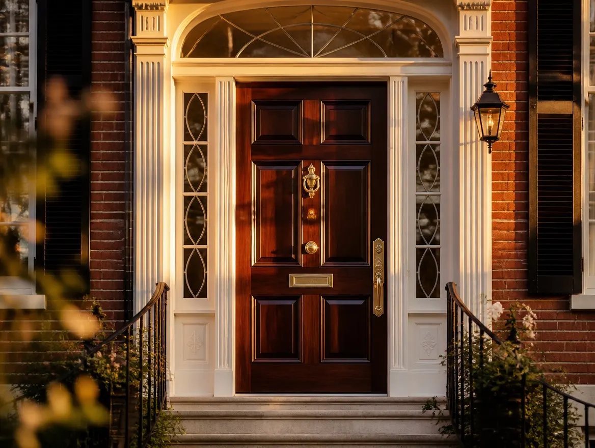
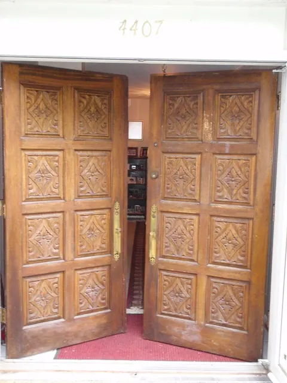
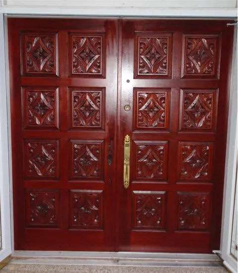

Door refinishing & restoration · DC · MD · VA
A house leads with its door.
We refinish and restore wood entry doors across the Washington DC metro area — including the Capitol Hill historic district, Georgetown, Maryland and Virginia — entirely by hand.
Why doors fail
No piece of furniture works harder.
An entry door lives outside the climate the rest of your furniture enjoys. Sun bleaches and bakes the finish; rain and snow work at every joint; each season moves the wood. In time even a good varnish dulls, checks and lets go — and the first thing anyone sees of the house is a tired door.
Brought back by hand, that same door does more for a home’s curb appeal than almost anything else on the street. And if yours is a valuable antique — as so many are in Washington’s historic districts — restoration is also preservation: the work protects the door’s authenticity as carefully as its looks.
-
Antique expertiseHistoric and antique doors are a specialty of the shop — including restorations in the Capitol Hill Historic District and Northwest DC, and a century-old door among our recent projects.
-
The hand methodEvery door is stripped, stained and varnished by hand, start to finish — no sprayers, no dip tanks.
-
On the recordDon’t take our word for it — our clients’ reviews are on Angie’s List for anyone to read.
-
On-site optionsOur signature process happens in our workshop, but on-site refinishing is available when the situation calls for it.
The signature process
Five steps, no shortcuts.
Our signature approach brings your door to the workshop, where it can be stripped, stained and finished under one roof — with the same patience we give a fine antique.
And while your door is with us, the opening is never left to chance. We fit the doorway with a large weatherized wood plank — exceptionally secure, stronger than the door itself — so the house stays protected against the weather and intruders alike until the door comes home.
Start with a free estimate →-
Assessment & pick-up
We bring your door to our shop for a comprehensive inspection and plan the restoration before a single tool touches it.
-
Gentle stripping
The old finish comes off delicately, by hand — preserving the wood’s integrity while ensuring a finish that lasts.
-
Enhancing the grain
A light sanding, then a hand-wiped stain that draws out the natural beauty of the wood grain.
-
Protective varnish
Several coats of our signature exterior varnish stand between the wood and the weather — and bring the color to its full depth.
-
Secure area protection
While the door is away, the doorway stays sealed behind a weatherized plank stronger than the door itself, until the two trade places again.
Before & after
A carved pair, reclaimed.
{kind=link}

{kind=link}

Years of sun and weather had turned this hand-carved pair grey and dry, the detail of the panels sinking under a failing finish.
Stripped gently by hand, sanded lightly and given a hand-wiped stain, the grain came back first — then several coats of exterior varnish brought up the color. The carving stands crisp again, and the doors read deep red mahogany from the street.
Hand stripped · Hand-wiped stain · Exterior varnish
More doors in the gallery →Your door’s next century starts with a photograph.
Email a few pictures of your door to info@refinishing.org, or fill out the estimate form — we’ll look them over and reply promptly with a detailed, no-obligation estimate.